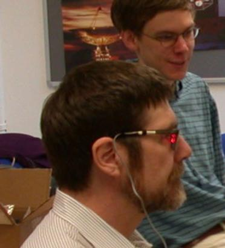
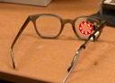
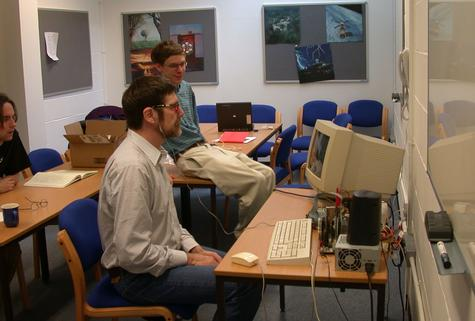

Dasher Developments |
|
|  |
|  |
The Owl is an invention of Martin King: an eyetracker without imaging, it works by measuring the intensity of reflected light from 8 directions in 8 directions around the eye. A prototype developed about 1987 gives excellent tracking of the eye with just four calibration points.
The Owl is so simple, it could be mass-produced as an eyetracker costing less than $10. It requires nothing to be fixed to the computer - no lights, no cameras. The user just attaches the Owl to his glasses.
The Owl's performance seems similar to that of more expensive eyetrackers. Should it be developed further? Creating a USB version of the device would probably require a couple more man-years of effort. One deficiency is that the Owl alone gives only relative eye-direction (so someone who wants to move their head around will need an additional head-orientation-tracker).
